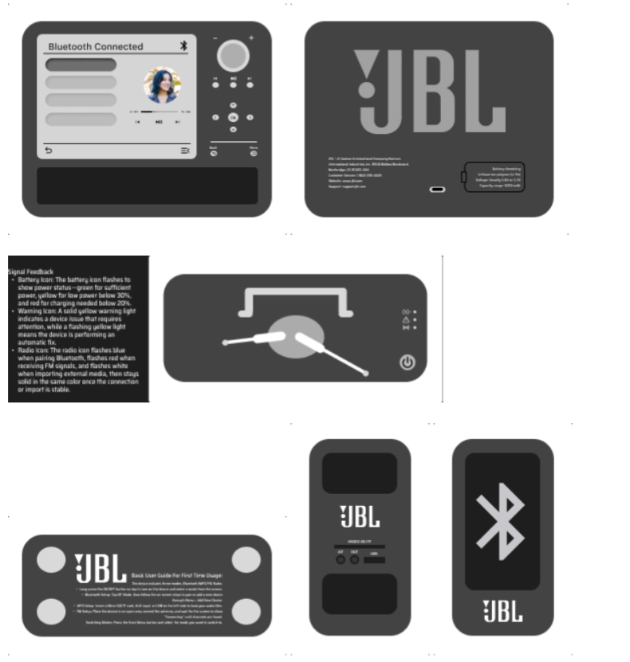
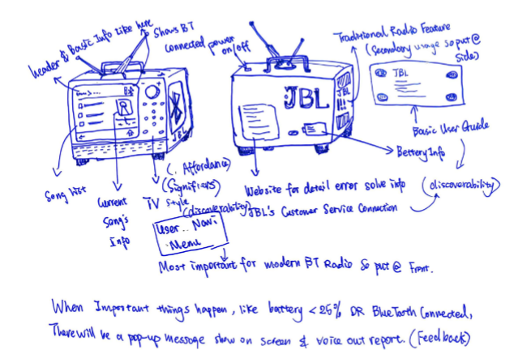

Retro Television Design
Research & Inspiration
This project began with an investigation of existing radio products on Sketchfab and commercially available Bluetooth speakers.
Two major product categories emerged:
- Traditional radios with crowded interfaces and excessive controls.
- Minimalist Bluetooth speakers lacking discoverability and clear feedback.
The redesign was informed by Norman's Seven Stages of Action and Principles of Design, focusing on discoverability, feedback, affordances, mappings, and constraints.
Design Process
The project progressed through research, concept development, interface design, and 3D prototyping.
3D Prototype

Figure 1. 3D Blender prototype (final work).
Interface Design

Figure 2. Interface layouts developed in Figma.
Sketches & Iteration

Figure 3. Early concept sketches and iterative development.
Material Exploration
Various material combinations were explored to balance visual warmth, perceived quality, durability, and manufacturability.
- Wood-texture housing concepts
- Matte plastic alternatives
- Metal accent details
- Button and knob finish variations
Reflection & Future Work
This project strengthened my understanding of discoverability, feedback, affordances, signifiers, mappings, and constraints in human-centered design in the limited 2 week timeframe. The final design balances aesthetic appeal with functional usability, but further validation through user testing and market evaluation is necessary to ensure the product meets user needs and expectations.
5. Final Rendering
Based on the limited two-week project timeframe, the final rendering stage was not completed and will be developed in future iterations following additional research and user testing.
Future development should validate these design decisions through user testing and market evaluation.
- Conduct usability testing with target users.
- Evaluate learnability and task completion.
- Gather market feedback on product appeal.
- Refine workflows based on test results.